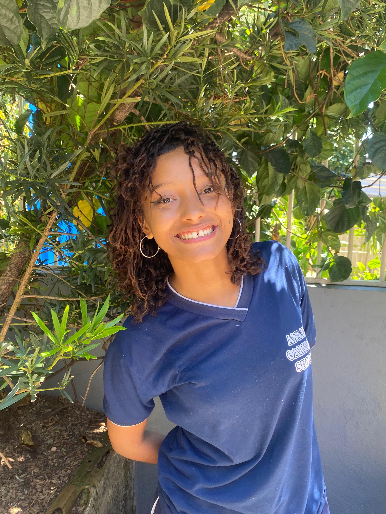

No curso, Izadora Nicole aprendeu HTML/CSS, sua maior dificuldade é arduino e sua facilidade é HTML/CSS, o que ela mais gosta é HTML/CSS, o curso influênciou capacitando para um emprego melhor, ela não pretende seguir a carreira, seu melhor momento foi quando conseguiu fazer seu primeiro site em HTML/CSS, o que mais se orgulha também é HTML/CSS, para ela o mais importante é entender o impacto da tecnologia na sociedade, ela sim ja teve medo de não consiguir acompanhar o ritmo da turma o seu conselho é, não desita persista no final você conquista, o curso influenciou na sua vida tendo mais paciência para aprender.